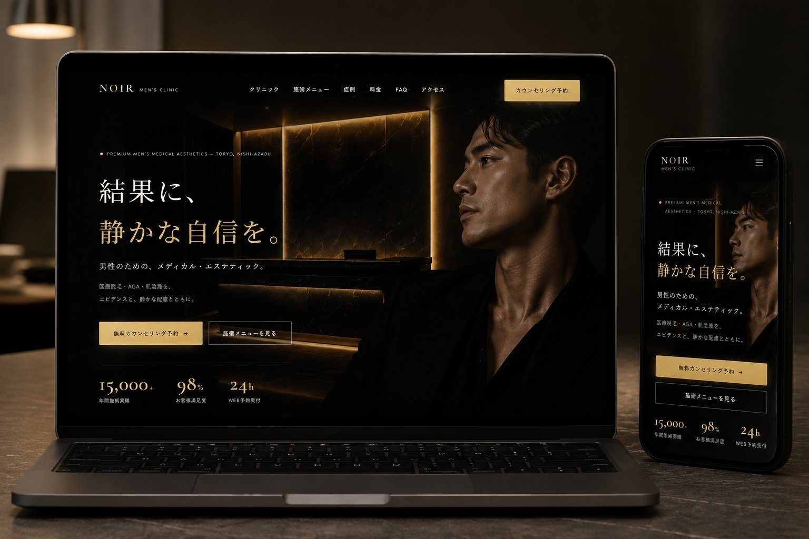
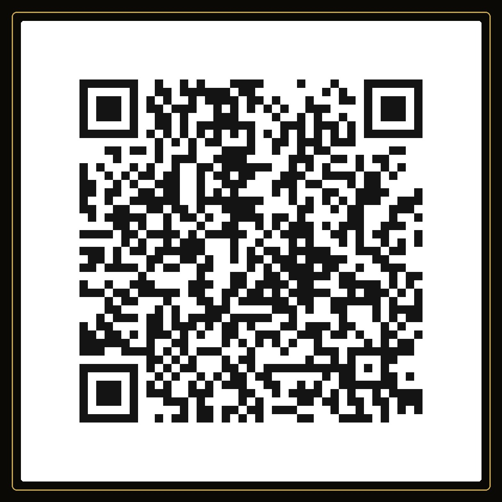

男性のためのメディカル・エステティックブランド「NOIR」の
ブランド価値を体現する公式サイトのデザイン・設計・実装。
WordPressテーマ化を前提とした、運用可能なコーポレートサイト。
「NOIR MEN'S CLINIC」は、医療脱毛・AGA・肌治療を扱う男性向けメディカル・エステティッククリニックです。 本サイトは、その上質なブランド体験をそのままWeb上で再現することを目的とした公式コーポレートサイトです。
本プロジェクトでは、単なる情報掲載にとどまらず「来院前の不安を解消し、カウンセリング予約へと自然に導く」ことをゴールに設定しました。 高級感のあるビジュアルと、医療機関としての信頼性・エビデンスを両立させ、ユーザーが安心して一歩を踏み出せる設計を行っています。
実装面ではWordPressテーマ化を前提とし、クリニック側が施術メニューや症例、料金などを自ら更新・運用できる構成としています。 デザインからフロントエンド実装、CMS化までを一貫して担当しました。
| プロジェクト名 | NOIR MEN'S CLINIC 公式サイト 制作 |
| サイト種別 | クリニック／コーポレートサイト（予約導線あり） |
| 担当範囲 | 企画・情報設計・UIデザイン・コーディング・WordPressテーマ化 |
| 実装方式 | オリジナルWordPressテーマ（自作テンプレート） |
| 対応デバイス | PC ／ タブレット ／ スマートフォン（レスポンシブ） |
| 想定ページ数 | クリニック紹介・施術メニュー・症例・料金・FAQ・アクセス・予約 ほか |
美容医療に関心はあるものの「クリニックは敷居が高い」「派手な広告に抵抗がある」と感じている、感度の高い男性層を主なターゲットとしました。
美容医療サイトにありがちな「過度な煽り」「情報の不透明さ」を避け、 静かで誠実なトーンのまま予約数を最大化する。これが本プロジェクトの中心課題です。
| 課題 | 現状の問題 | 本サイトでの解決方針 |
|---|---|---|
| ① 信頼性の不足 | 美容医療に対する不安・警戒心が強く、来院のハードルが高い。 | 医師紹介・症例・実績数値・エビデンス記載で安心感を醸成。 |
| ② ブランド感の欠如 | 競合サイトは情報過多で雑多な印象。高級感が伝わらない。 | 黒×ゴールドの統一デザインで上質なブランド体験を提供。 |
| ③ 予約導線の弱さ | 料金や空き状況が分かりにくく、予約まで離脱が多い。 | 常設CTA・空き状況表・予約フォームで導線を明確化。 |
| ④ 運用性の低さ | 更新のたびに制作会社へ依頼が必要で、情報が古くなる。 | WordPressテーマ化により担当者が自ら更新可能に。 |
「派手さではなく、静かな説得力で選ばれるクリニックサイト」を実現する。 ユーザーが感じる不安を一つずつ解消し、最終的に “無料カウンセリング予約” という行動へ無理なく接続することを成功指標と定義しました。
コンセプトは「Quiet Luxury — 静かな高級感」。
黒の余白とゴールドの輝きで、語りすぎないラグジュアリーを表現します。
ベースカラーには深いブラックを採用し、画面全体に落ち着きと重厚感を与えました。 アクセントには彩度を抑えたシャンパンゴールドを用い、ロゴ・見出し・CTA・罫線などの要点に限定的に使用。 色数を絞ることで、洗練された統一感と「特別な場所」という印象を生み出しています。
上記コンセプトを実際の画面に落とし込んだトップページのイメージです。 深い黒の余白にゴールドのアクセントを限定的に効かせ、語りすぎない上質さを画面全体で表現します。
| 採用する方向性 | 避ける方向性 |
|---|---|
| 静かで知的／信頼できる／上質 | 過度な煽り・派手な装飾・割引訴求の多用 |
| 余白の効いた洗練されたレイアウト | 情報過多で雑多な印象のページ |
| エビデンスに基づく誠実なコピー | 誇張表現・不安を過度に煽る表現 |
「知る → 比べる → 安心する → 予約する」というユーザー心理の流れに沿って、 ページ構成と導線を設計しました。
| ページ | 役割 | 主な掲載要素 |
|---|---|---|
| トップ | 第一印象でブランドを伝え、各ページへ誘導 | ヒーロー・実績数値・CTA |
| クリニック紹介 | 理念・空間・医師でクリニックの信頼を伝える | 院内紹介・医師紹介 |
| 施術メニュー | 提供施術を分かりやすく整理して提示 | メニューカード・施術詳細 |
| 症例 | 実際の変化を見せて検討材料を提供 | 症例カード・Before/After |
| 料金 | 料金の透明性を担保し不安を解消 | 料金表・注記 |
| FAQ | 来院前の疑問を事前に解消 | アコーディオンQ&A |
| アクセス | 来院のハードルを下げる | 地図・診療時間・空き状況 |
| 予約 | コンバージョンの最終地点 | 予約フォーム |
コンバージョンの中核となる予約フォーム。入力項目を必要最小限に絞り、希望日時・施術内容・連絡先のみで完結する設計としました。 スマートフォンでの入力ストレスを軽減し、確認画面と完了画面を備えることで安心して送信できる体験を提供します。
アクセスページに、診療時間ごとの予約可否を一目で把握できる空き状況表を実装。記号によって直感的に空き状況を伝え、予約行動を後押しします。
| 診療時間 | 月 | 火 | 水 | 木 | 金 | 土 | 日 |
|---|---|---|---|---|---|---|---|
| 午前 10:00–13:00 | ○ | ○ | △ | ○ | △ | × | × |
| 午後 14:00–19:00 | △ | ○ | ○ | △ | ○ | △ | × |
○ … 予約可 ／ △ … 残りわずか ／ × … 受付不可 （管理画面から更新可能）
医療脱毛・AGA・肌治療などの施術を、カード型レイアウトで整理。 各カードから施術詳細へ遷移し、効果・流れ・料金を確認できます。 カテゴリごとに視認性高く配置し、比較検討をスムーズにします。
施術前後の変化をカード形式で掲載。施術名・期間・コメントをセットで提示し、ユーザーが自分の悩みに近い症例を見つけやすい構成。 実例の提示により来院前の不安を軽減します。
担当医師のプロフィール・経歴・施術方針を顔写真とともに掲載。 「誰が施術するのか」を明確にすることで、医療機関としての信頼性と安心感を高めるセクションです。 症例ページや予約フォームとも連携し、信頼から予約への流れを強化します。
PC・タブレット・スマートフォンの3段階のブレークポイントで最適化。 特にスマートフォンでは、ハンバーガーメニュー・縦積みレイアウト・タップしやすいボタンサイズを徹底し、 移動中や就寝前など「実際に閲覧される場面」での使いやすさを優先しました。
クリニック担当者が「自分たちで運用できる」ことを前提に、 オリジナルWordPressテーマとして設計・実装しました。
施術メニュー・症例・料金・お知らせなど、更新頻度の高いコンテンツを管理画面から編集できるようにすることで、 公開後も常に最新の情報を保てる運用体制を実現しました。制作会社への都度依頼が不要となり、運用コストを抑えられます。
ヘッダー・フッター・カード・フォームなど繰り返し使用するパーツを template-parts/ 配下に分割。
コードの重複を排除し、修正は1ファイルで全ページに反映される保守性の高い構成としました。
| 領域 | 採用技術と用途 |
|---|---|
| マークアップ | HTML5 — セマンティックな構造で可読性・SEOに配慮 |
| スタイリング | CSS3 — CSS変数による配色管理、Flexbox/Gridでレイアウト |
| インタラクション | JavaScript — メニュー開閉・FAQアコーディオン・フォーム制御 |
| CMS / 動的処理 | WordPress（PHP）— オリジナルテーマによるコンテンツ管理 |
| バージョン管理 | Git / GitHub — ソースコード管理と公開 |
「高級感」と「使いやすさ」は時に相反します。本サイトでは、装飾を足すのではなく “余白・字間・色数の削減” によって上質さを表現することで、視認性と高級感を両立させました。 美しさが操作性を損なわない設計を一貫して意識しています。

※ ポートフォリオ確認用のログイン情報です。
実際の動作はこちらのLive Link環境でご確認ください。
